Astronomical journals
The publication landscape in astronomy is continuously changing, with journals trying to adjust to new requirements by funding agencies, particularly regarding open access. I have collected here a list of the most common journals in which astronomers may consider publishing their papers. I indicate the subscription model and whether there are page charges (note that for latter, you generally need to add VAT, even when I did not indicate it). For some journals, authors from institutions that signed specific agreements with the publishers will not need to pay the article page charges. Similarly, several publishers waive the article page charges for authors from low- or medium-income countries. It is useful to check the conditions for each journal separately.
There are two main ways to have your papers in open access (OA): on a publisher's platform (gold or diamond open access) or archiving in a public repository (green open access).
See here, here, and here
for useful presentations on OA and on the publication landscape in astronomy, courtesy of the ESO librarians.
Except when indicated, authors can always make use of Green OA, by putting their own copy of their paper on arXiv, as well as on their personal or their institution's web site, under an appropriate license.
Payments of page charges should only occur when the paper is accepted. Do not pay anything at submission.
Here some useful abbreviations:
- APC: Article publication charge
- OA: Open access
- IOP: Institute of Physics
- CUP: Cambridge University Press
- OUP: Oxford University Press
Please let me know if you would like to find more information here or if I am missing some essential journals.
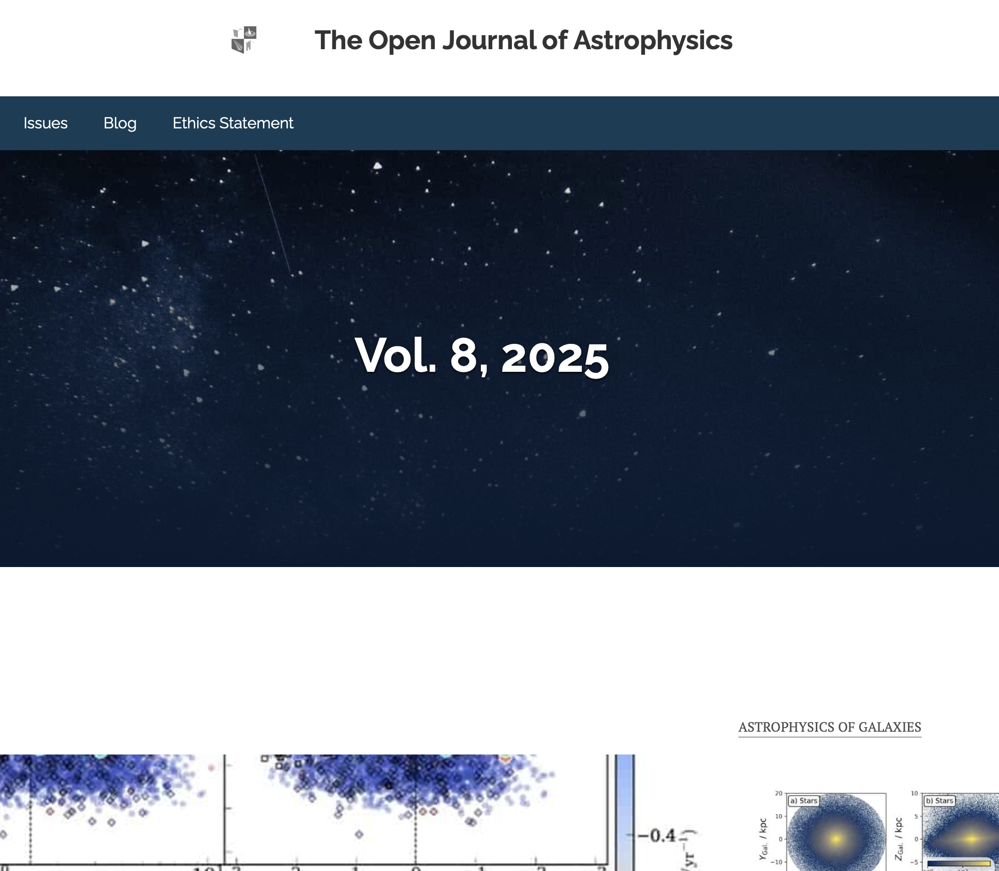
The Open Journal of Astrophysics
Maynooth Academic Publishing
This is an arXiv overlay journal, OA (CC-BY licence). Authors should use this license when putting their paper (prior to submission) on arXiv.
No page charge.
No copy-editing.
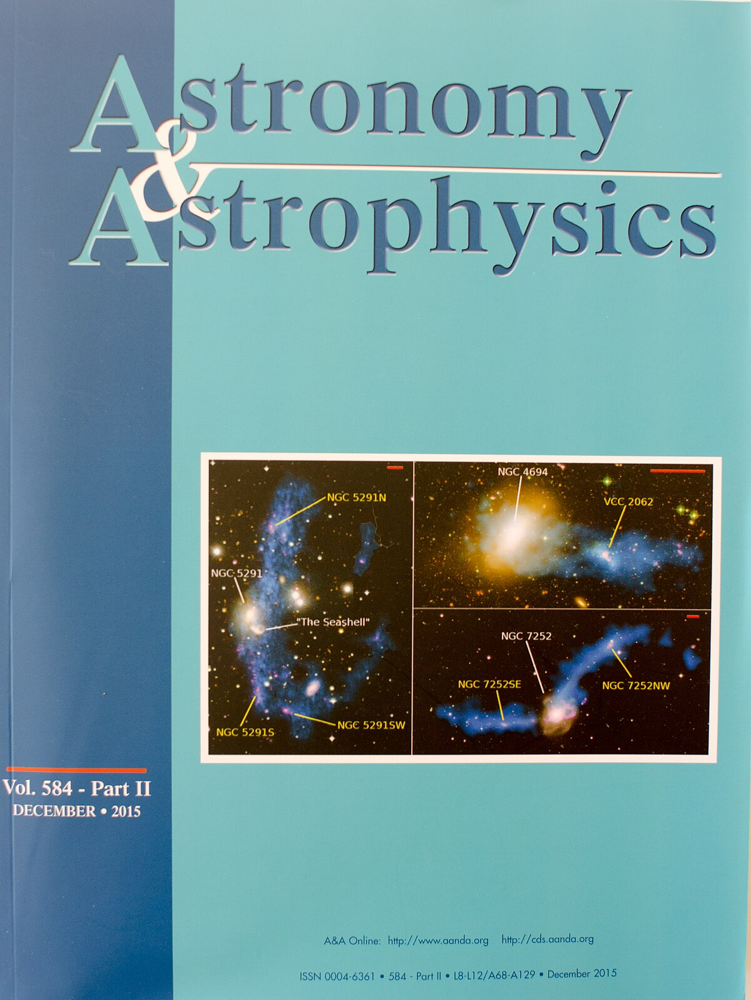
Astronomy & Astrophysics
Open access journal. Free for authors from member countries
and from countries in Group A of Research4Life.
Page charges of 100 or 150 EUR per page for others.
There are supplementary page charges for long articles.
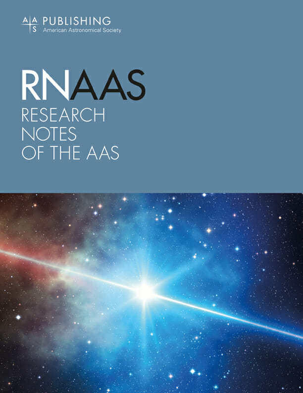
Research Notes of the AAS (RNAAS)
AAS/IOPS
A fully open access (CC-BY 4.0 license) publication with no APC.
Non-peer reviewed!
Limited to 1,500 words or fewer, with no more than a single figure or table (but not both), and with 150 words reserved for the required abstract. Authors can put their paper on arXiv under a CC-BY or the arXiv-exclusive license.
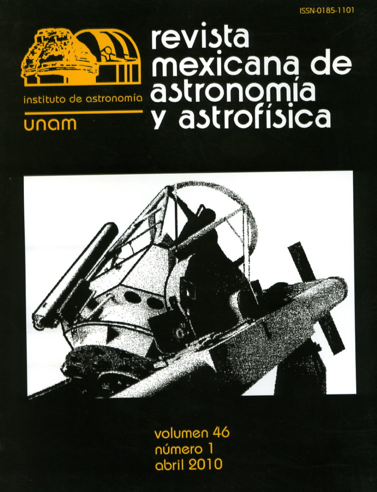
Revista Mexicana de Astronomía y Astrofísica (RMxAA)
UNAM
Gold open access. No page charges.
Science
AAAS
Subscription journal. There are no page charges and no possibility to publish in open access (?), but there is cost associated with colour figures.
As for Nature, there is a collection of associated journals, some of which publishing in open access but with APC. See https://www.science.org.
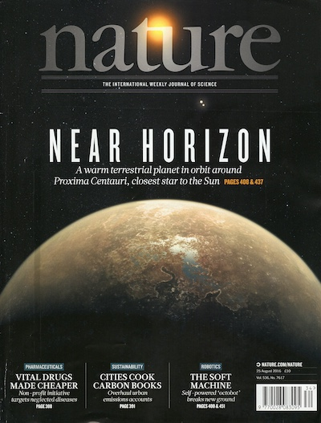
Nature
Springer Nature
Subscription model.
Free for authors.
The APC to publish Gold Open Access in Nature is 10,690 EUR.
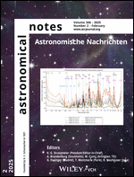
Astronomical Notes (AN)
AIP/Wiley
Subscription-based journal.
There are no page charges for normal licence.
For Golden OA, the page charges are 2,350 EUR (+VAT).
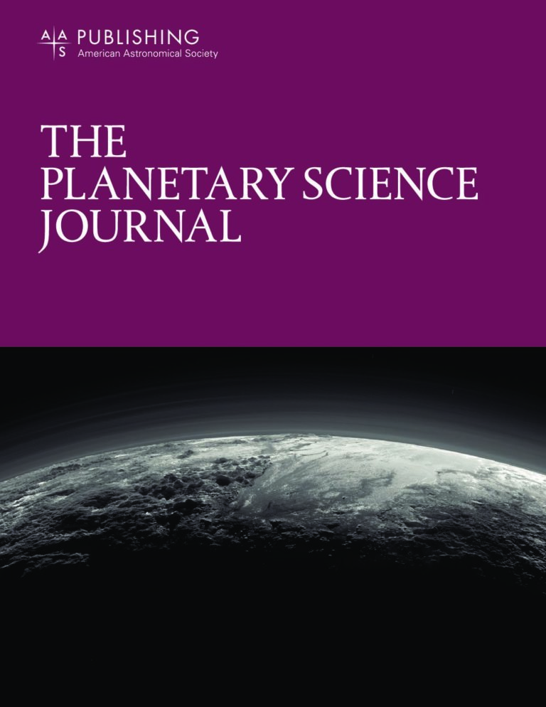
The Planetary Journal
AAS/IOP
Full OA journal. It is devoted to recent developments, discoveries, and theories in planetary science. It uses dual anonymous peer review and generally two reviewers. The page charges is based on "quantas", with a paper with 5 figures, 3 tables, and 7700 words costing about 2,020 USD.
journals.aas.org/planetary-science-journal/
iopscience.iop.org/journal/2632-3338
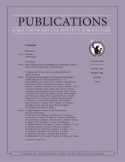
Publications of the Astronomical Society of the Pacific (PASP)
ASP/IOP
This is a hybrid open access journal. Apart for authors of institutions with transformative agreements, there are page charges of 129 USD per page (+175 USD for Supplementary information). There is the alternative option to have the paper published in Gold OA (CC BY license), at a cost of 3,325 USD (about 2,975 EUR).
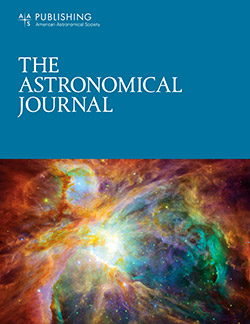
The Astronomical Journal (AJ)
Open access journal (CC-BY license). The page charges start at 1,357 USD (about 1,212 EUR; for up to 30 "quanta"; for example, 5 figures, 3 tables, and 7700 words).
journals.aas.org/astronomical-journal/
iopscience.iop.org/journal/1538-3881
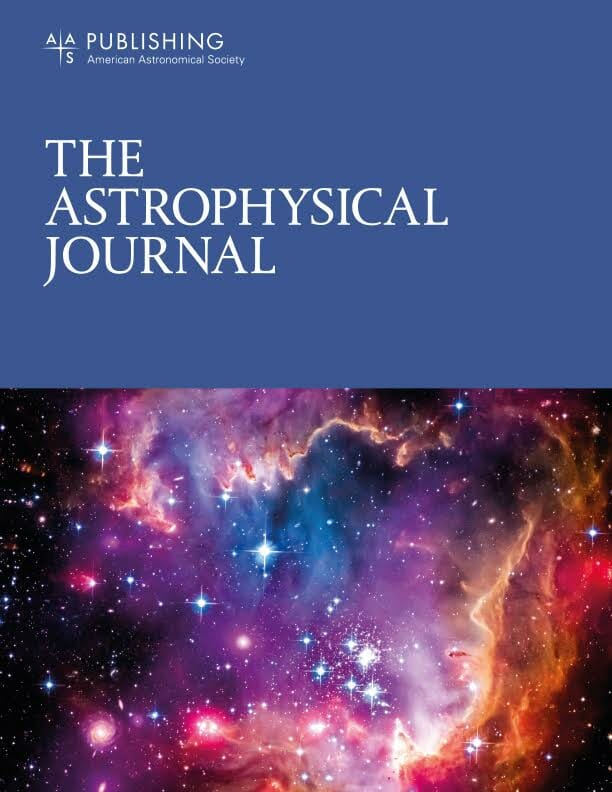
The Astrophysical Journal (ApJ)
Open access journal (CC-BY license). The page charges start at 1,357 USD (about 1,212 EUR; for up to 30 "quanta"; for example, 5 figures, 3 tables, and 7700 words).
journals.aas.org/astrophysical-journal/
iopscience.iop.org/journal/0004-637X
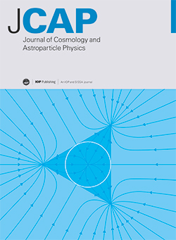
Journal of Cosmology and Astroparticle Physics (JCAP)
SISSA/IOP
Hybrid open access journal.
Subscription publication is free of charge.
Gold OA (CC-BY licence) is available with an APC of 2,380 EUR. There are agreements with some institutions so that the authors do not need to pay the APC.
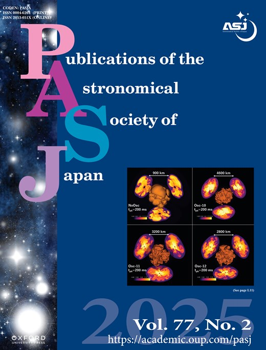
Publications of the Astronomical Society of Japan (PASJ)
ASJ/OUP
Hybrid journal. Subscription papers have a page charge of 6,000 Yens (about 36.5 EUR) per page. For Gold open access licence (CC-BY), the cost is 358,550 Yens (about 2,200 EUR) for non members of the ASJ.
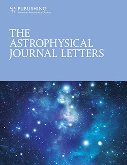
The Astrophysical Journal Letters (ApJL)
Open access journal (CC-BY license). The page charges are 2,836 USD (about 2,500 EUR) for up to 40 quanta and there is a long-article surcharge.
journals.aas.org/astrophysical-journal-letters/
iopscience.iop.org/journal/2041-8205
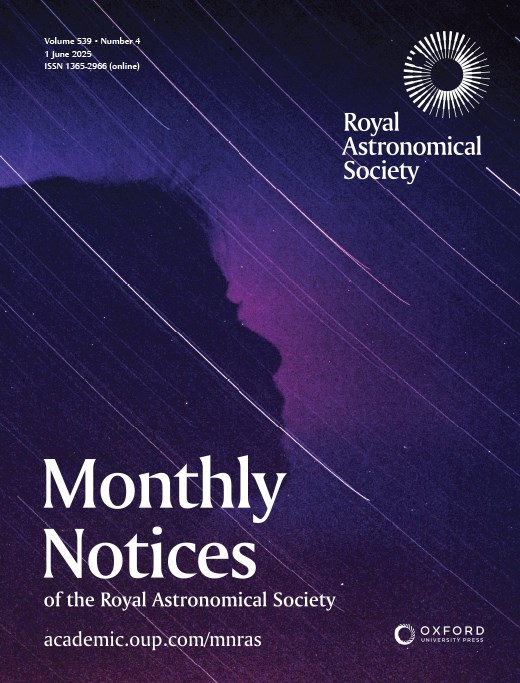
Monthly Notices of the Royal Astronomical Society (MNRAS)
RAS/OUP
Open access journal (CC-BY). The Article Processing Charge for non members for Main journal papers is 2,310 GBP (about 2,750 EUR) and 1,100 GBP (about 1,300 EUR) for Letters.
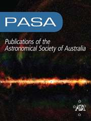
Publications of the Astronomical Society of Australia (PASA)
ASA/CUP
Gold open access (CC-BY licence) journal.
The APC are 2,460 GBP (about 2,900 EUR) plus taxes, with a discount for society members.